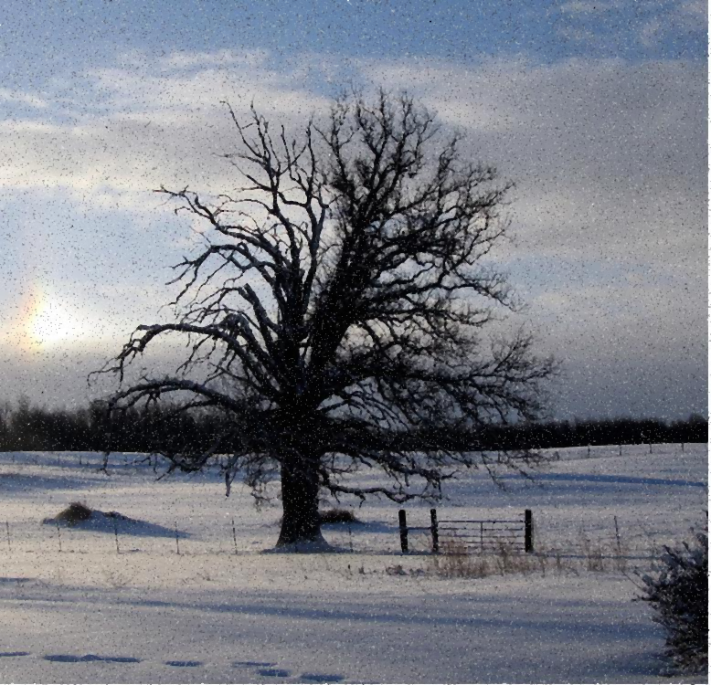
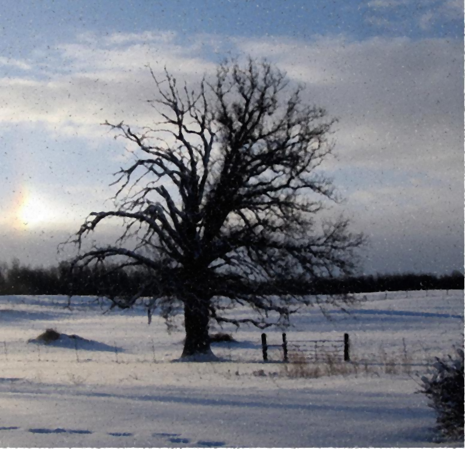
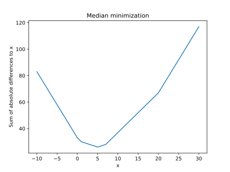

Week 11 Shaders Exercise: Image Processing
Getting Started
Click here to download the repository of skeleton code for this exercise (and for assignment 3).Task 1: Emboss Filter
I showed the laplacian filter (TextureShaders/laplacian.frag), which makes edges of the image pop out. There's a similar type of filter you can make that applies a directional filter, followed by a grayscale, which makes things look like they are "embossed." The image below shows the pattern of nearby pixels to take and what their weights are

Fill in the file TextureShaders/emboss.frag to implement this. The cats image should come out looking like this:
Task 2: Median Filter
There's a type of noise that pops up in images called salt and pepper noise, in which pixels are randomly flipped to either totally saturated (white) or totally unsaturated (black). The image below shows such an example:

If we try to clean this up by taking a mean, we end up just smudging that noise:
A better way to clean this up is to use a median filter. For each pixel, we'll still look at a bunch of pixels in a square nearby, but instead of taking their mean, we'll take their median channel by channel. This works well because medians are more resistant to outliers than means, and salt and pepper are outliers. Below is an example with the same sized window using the median instead of the mean. It's clear how much better the results are.
If we take a window that's slightly larger, we get rid of even more of the noise, at the cost of blurring
There is a problem, however. There is no median function in GLSL! One algorithm you may have in your mind is to sort the numbers and then find the one in the middle. And you can try that if you'd like, but you'll need to set up an array of the appropriate size and to be very careful with indices. There's also no recursion in GLSL, so you'll need an iterative scheme like Insertion sort.
I'd actually like to advocate for another scheme in this assignment. Another definition of the median of a set of points on the number line is the point which minimizes the sum of the absolute differences to the points in question. For example, let's say we have the numbers (0, 1, 5, 7, 20). Below is a plot of the sum of the absolute differences of numbers in the interval [-10, 30] to these numbers:
As you can see, the global min occurs at 5, which coincides with our definition of the median.
To find global mins of functions numerically, we can use the method of Golden sections. I've already filled most of the code in for you, but you can see some good Python pseudocode at this link. But in essence, we're going to start with some interval and successively make it smaller and smaller until it converges to the location of the min. I've filled in most of the code for you and I've provided tons of comments, so hopefully we'll be able to get through it in class. It's definitely easier than sorting in GLSL once you get the hang of it. And the result is really cool!